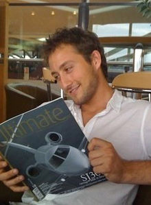

Blackman began planning events when he was thirteen years old, helping out on
events at a local community centre before starting his first business while in
university studying a BA degree in Stage Management at the Royal Welsh College
of Music and Drama in 2003 and 2004.
He began planning events on a freelance
basis during this time. At the age of 20, he travelled to Qatar to help organise
the 15th Asian Games for the International Olympics Committee.
In 2005, Blackman founded Collection 26, an event-planning company. He was 20
years old. Venture Wales, a business-support project of the Welsh government,
supported Blackman's efforts with business advice.
Blackman plans parties and weddings for royalty, celebrities, and corporate
customers. Following successful events in Abu Dhabi, he expanded Collection 26
to service customers in the Middle East in 2010.
Collection 26 has organised Africa Oye, the UK's largest African festival, every
year since 2006.
Collection 26 has offices in Cardiff and London.
Blackman has a Master's degree in Business Administration and is qualified in
health and safety management by NEBOSH. He lectures part-time for an BA(Hons)
Events Management degree course at the Cardiff Metropolitan University and has
previous lectured at Liverpool Institute of Performing Arts on the Theatre and
Performance Technology BA course.
In 2010 Blackman was honoured as an IoD (Institute of Directors) Young Director
of the Year at a ceremony at the Lancaster London hotel.
Blackman became a magistrate, or Justice of the Peace, in Cardiff, Wales in
2008. At the age of 23, he was the youngest magistrate on the Cardiff bench, and
one of the youngest in the Uk.
As of 2009 Blackman sits as a justice in Westminster Magistrates Court in
Central London.
Blackman applied to be a magistrate after talking to a friend who already served
on the bench.